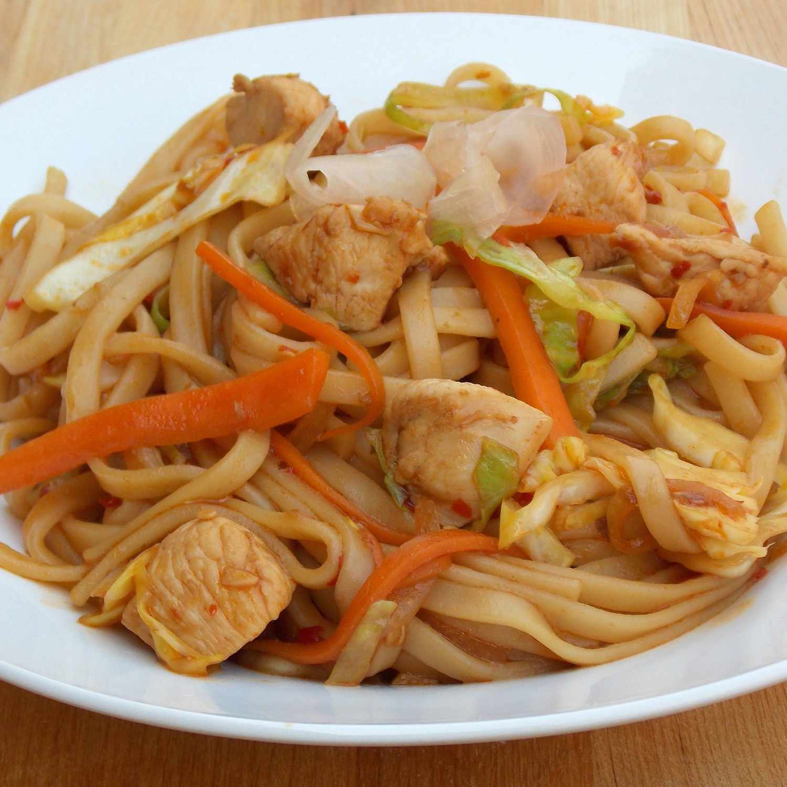

Yakisoba Chicken Recipe

Best yakisoba chicken I've tasted.
Japanese buckwheat flour noodles with chicken at their best! Noodles can
be found in an Asian foods market.
Ingredients:
- ½ teaspoon sesame oil
- 1 tablespoon canola oil
- 2 tablespoons chile paste
- 2 cloves garlic, chopped
-
4 skinless, boneless chicken breast halves - cut into 1 inch cubes
- 1 onion, sliced lengthwise into eighths
Steps:
-
In a large skillet combine sesame oil, canola oil and chili paste;
stir-fry 30 seconds. Add garlic and stir fry an additional 30 seconds.
Add chicken and 1/4 cup of the soy sauce and stir fry until chicken is
no longer pink, about 5 minutes. Remove mixture from pan, set aside, and
keep warm.
-
In the emptied pan combine the onion, cabbage, and carrots. Stir-fry
until cabbage begins to wilt, 2 to 3 minutes. Stir in the remaining soy
sauce, cooked noodles, and the chicken mixture to pan and mix to blend.
Serve and enjoy!